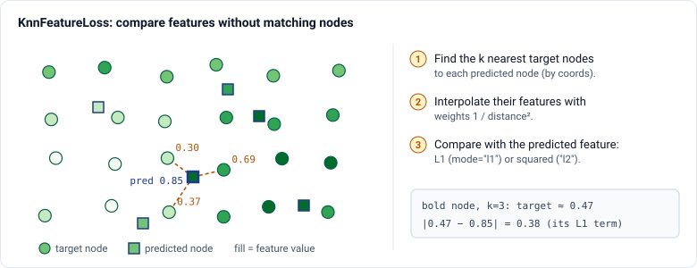
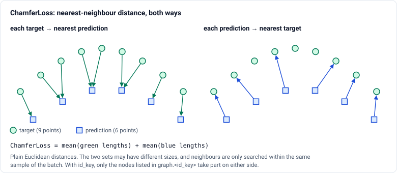
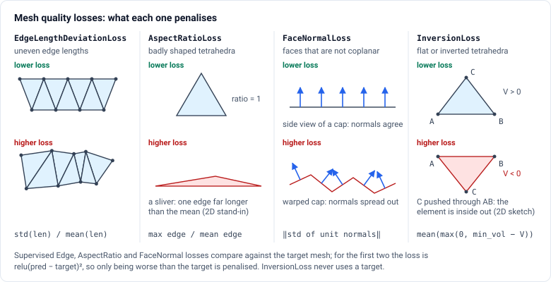

im2sim.losses#
Classes#
Computes the aspect ratio loss for tetrahedral meshes, which is a measure of skewness or distortion of the tetrahedra in the mesh. |
|
Computes the Chamfer loss between two point clouds represented as graphs. |
|
Base class for losses derived from a soft confusion matrix. |
|
Dice loss, also known as F1 loss. |
|
Computes the edge length deviation loss between two graphs. |
|
Computes the face normal loss for triangular meshes. |
|
Focal Tversky loss. |
|
Computes the inversion loss for tetrahedral meshes. |
|
Intersection over Union (IoU) or Jaccard loss. |
|
Computes the loss between features of two graphs using k-nearest neighbors interpolation based on their coordinates. |
|
Structural Similarity Index Measure (SSIM) loss. |
|
Tversky loss. |
Functions#
Guide#
losses provides training objectives for images, graph features, point clouds and meshes. They
fall into two kinds:
agreement losses compare a prediction with a target: the confusion losses,
SSIMLoss,KnnFeatureLossandChamferLoss;quality losses constrain the predicted mesh itself, with or without a target:
EdgeLengthDeviationLoss,AspectRatioLoss,FaceNormalLossandInversionLoss.
Prediction |
Loss |
Main consideration |
|---|---|---|
Segmentation |
|
class imbalance; weighting of false positives against false negatives |
Image reconstruction |
|
local structure; |
Field on a graph |
|
no node correspondence needed; shared coordinate system required |
Node positions |
|
measures position only, not mesh quality |
Mesh deformation |
|
balance accuracy against element quality |
Important
Argument order differs between losses. SSIMLoss is called as loss(prediction, target).
Every other loss is called as loss(target, prediction). For the graph losses, the target is
ignored (pass None) when the loss is unsupervised.
Segmentation#
The confusion losses build a soft confusion matrix from probabilities, per batch element and channel, and turn it into an overlap score. They optimise overlap rather than per-voxel accuracy, so a small foreground counts as much as a large background.
from im2sim.losses import DiceLoss, TverskyLoss
loss_fn = DiceLoss(average="macro")
loss = loss_fn(target, prediction) # both [B, C, *spatial], prediction as probabilities
Inputs are channel-first,
[B, C, *spatial], with one channel per class, and the target and prediction must have the same shape. Predictions must be probabilities, for example aftersigmoidorsoftmax, not class labels.averagesets how classes are combined."macro"gives each class equal weight."micro"pools all voxels, so large classes dominate."weighted"usesclass_weightsif they are given, and otherwise weights each class by its share of the target voxels.DiceLossandIoULossweight false positives and false negatives equally. The Tversky losses let you weight them differently, andFocalTverskyLossalso emphasises hard examples.
Image reconstruction#
SSIMLoss returns 1 - SSIM. SSIM compares local means, variances and covariances under a
Gaussian window, so it rewards preserved structure rather than exact intensities.
from im2sim.losses import SSIMLoss
loss_fn = SSIMLoss(max_val=1.0, rank=3)
loss = loss_fn(prediction, target) # [B, C, D, H, W]
max_valmust match the range of the data:1.0for images in[0, 1].filter_sizeandfilter_sigmaset the spatial scale of the comparison.rank=2on a 3D tensor computes 2D SSIM slice by slice.SSIM tolerates small intensity offsets. Add an L1 term when absolute intensities matter.
Fields on graphs#
KnnFeatureLoss compares node features on two graphs whose nodes do not correspond, for
example a predicted pressure field on a deformed mesh against a simulation on the true mesh.

from im2sim.losses import KnnFeatureLoss
loss_fn = KnnFeatureLoss(mode="l1", k=3, feature_key="pressure")
loss = loss_fn(target_graph, prediction_graph)
Both graphs need coords and the feature_key attribute, in the same coordinate system.
feature_channels restricts the comparison to some channels. Small k keeps the
interpolation local, and larger k smooths it. With batched graphs, neighbours are searched
only within the same sample.
Point positions#
ChamferLoss measures how close two point sets are without matching points one-to-one. The
two sets may have different sizes.

from im2sim.losses import ChamferLoss
loss_fn = ChamferLoss() # all nodes
wall_fn = ChamferLoss(id_key="wall_index") # only the wall nodes on both sides
loss = loss_fn(target_graph, prediction_graph)
Both directions are needed. The target-to-prediction term alone is low when every target point has a nearby prediction, even if extra predicted points are scattered elsewhere. The other term alone is low when predictions sit on the target but leave parts of it uncovered.
Chamfer says nothing about the elements between the nodes. A mesh can match the target surface closely and still contain slivers or inverted tetrahedra. For mesh models, pair it with quality losses.
Mesh quality#

Loss |
Needs on the graph |
Measures |
|---|---|---|
|
|
std / mean of all edge lengths |
|
|
mean over tetrahedra of longest edge / mean edge (1 for a regular tetrahedron) |
|
|
spread of the unit face normals; zero for a flat set of faces |
|
|
mean of |
cell_key and face_key name the graph attribute that holds the connectivity, such as the
*_cell_index attributes created by im2sim.mesh_ops.
FaceNormalLoss pulls faces towards a common plane, not towards a smooth surface. Apply it
to faces that should be flat, such as inlet and outlet caps, not to a whole curved vessel wall.
Supervised and unsupervised#
With supervised=False, the first three losses ignore the target and return the measure for
the prediction alone. Pass None as the target. With supervised=True, the default:
EdgeLengthDeviationLossandAspectRatioLossreturnrelu(measure(pred) - measure(target))². The prediction is penalised only for being worse than the target, never for being better.FaceNormalLossadds the distance between the mean face normals of the two meshes to the prediction’s own spread.
InversionLoss is always unsupervised, and ChamferLoss is always supervised.
Combining losses#
For a model that deforms a template mesh, a typical objective has a term for where the mesh is and terms for what it looks like:
from im2sim.losses import ChamferLoss, EdgeLengthDeviationLoss, InversionLoss
chamfer = ChamferLoss()
edges = EdgeLengthDeviationLoss(supervised=True)
inversion = InversionLoss(cell_key="vol_cell_index")
loss = (
chamfer(target_graph, prediction_graph)
+ 0.1 * edges(target_graph, prediction_graph)
+ 0.1 * inversion(None, prediction_graph)
)
The weights trade accuracy against element quality and are part of the training configuration. Too little regularisation leaves inverted or degenerate elements that break later simulation. Too much stops the mesh from reaching the target.